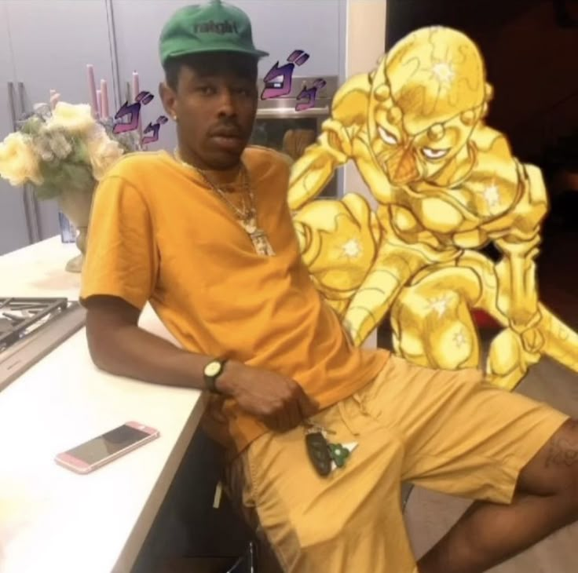
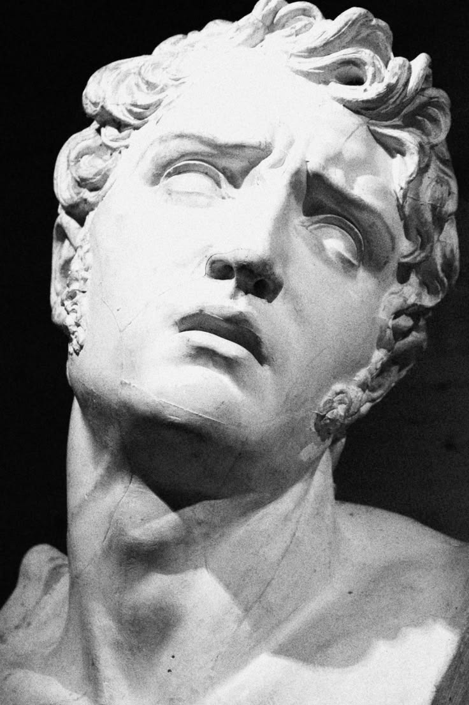
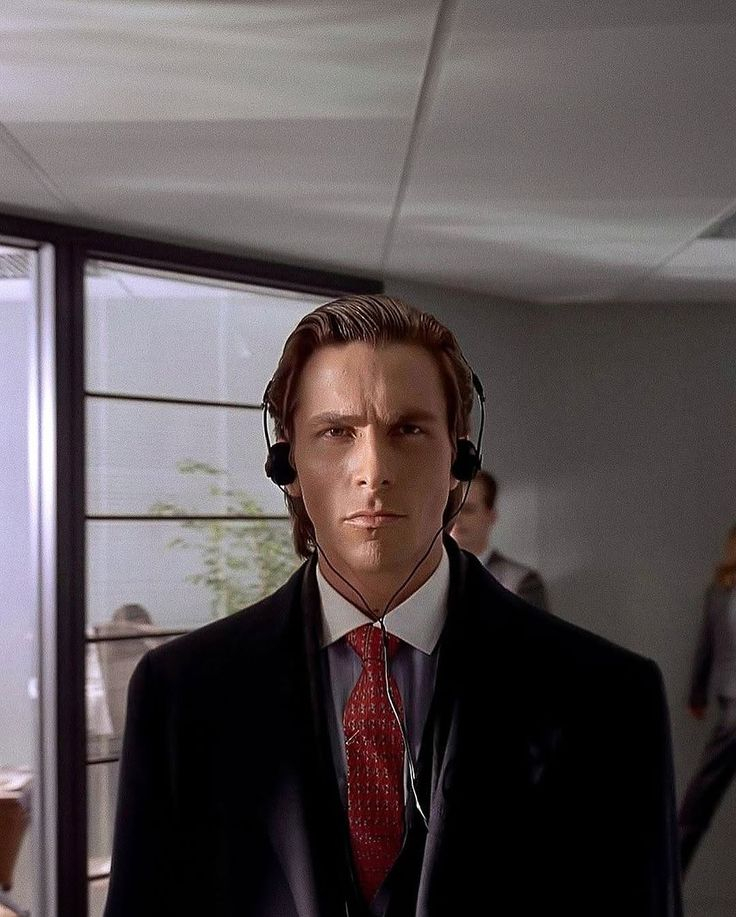
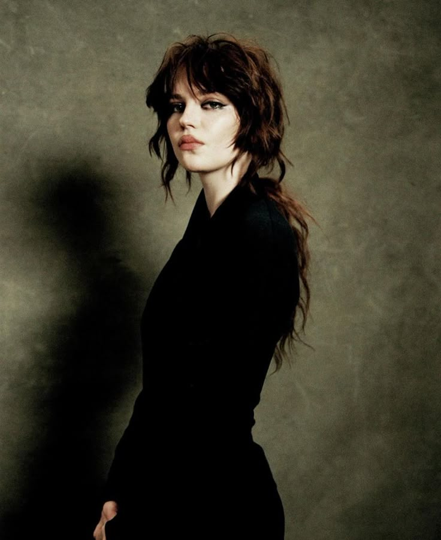

1. Bem-vindo ao Grau 6
Este é o grau mais avançado do curso até aqui. Você já sabe selecionar (Grau 2), ajustar cor (Grau 3), compor com texto e regras visuais (Grau 4) e usar filtros não destrutivos (Grau 5). Agora tudo isso se junta em uma única habilidade: fazer duas imagens de origens completamente diferentes parecerem uma só cena real.
🎯 Ao final deste guia você vai saber:
- Corrigir perspectiva para encaixar um elemento na cena certa
- Refinar seleções difíceis (cabelo, pelo, bordas complexas)
- Harmonizar cor entre elementos de fontes diferentes
- Fazer luz e sombra baterem entre todos os elementos
- Unificar tudo com ruído/grão e uma camada de cor global
2. O Desafio da Composição Fantástica
Colar uma imagem em cima da outra é fácil. O difícil — e o que este grau ensina — é fazer o olho não perceber a colagem. Isso depende de 5 fatores, todos abordados neste guia:
| Fator | Pergunta a se fazer |
|---|---|
| Perspectiva | Os elementos estão no mesmo ângulo de câmera? |
| Borda da seleção | Sobrou fundo antigo colado, ou faltou pedaço do objeto? |
| Cor | Os tons de cor combinam entre si? |
| Luz e sombra | A luz vem da mesma direção em todos os elementos? |
| Textura/grão | Uma imagem é nítida e a outra granulada? |
Inspiração
Um exemplo do "gênero" de edição que este grau ensina — uma pessoa com um elemento gráfico totalmente diferente composto atrás dela, como se fizesse parte da cena:

Isso é só para dar a ideia do estilo — a sua composição na prática deste grau deve ser uma criação sua, não uma cópia.
3. Escolhendo as Fontes
Antes de abrir o Photoshop, escolha bem: quanto mais parecidas as fontes já forem, menos trabalho de harmonização depois.
4. Correção de Perspectiva
Se a cena de fundo tem um ângulo de câmera, o elemento inserido precisa do mesmo ângulo para "grudar" nela.
2. Ctrl+T → botão direito → Distorcer ou Perspectiva
3. Arraste os cantos para acompanhar as linhas de perspectiva da cena de fundo (chão, paredes, horizonte)
5. Selecionando com Precisão — Cabelo e Pelo
Você já usou Selecionar e Máscara no Grau 2. Para composições fantásticas, o detalhe da borda é o que mais entrega uma edição malfeita — vale voltar a esse recurso com mais calma.
2. Selecionar e Máscara → pincel Aperfeiçoar Borda sobre fios de cabelo/pelo
3. Ative Decontaminar Cores para remover resquício da cor do fundo antigo nas pontas dos fios
4. Saída para "Nova Camada com Máscara"
6. Harmonização de Cor entre Elementos
Mesmo com a seleção perfeita, cores de temperatura diferente (uma imagem mais fria/azul, outra mais quente/amarela) denunciam a montagem instantaneamente.
2. Compare lado a lado com a cena de fundo e ajuste até os tons combinarem
3. Repita com Matiz/Saturação se a intensidade de cor também estiver diferente
7. Luz e Sombra Consistentes
O olho humano percebe inconsistência de luz mesmo sem conseguir explicar por quê.
2. Use Subexposição/Superexposição (Grau 3) no elemento inserido, na mesma direção
3. Se necessário, pinte uma luz de contorno (rim light) sutil no lado do elemento voltado para a fonte de luz
8. Sombras de Contato
Uma sombra de contato suave e escura embaixo do elemento é o que "prende" ele na cena.
2. Elipse preta (Grau 4), suavizada com Desfoque Gaussiano (Grau 5)
3. Reduza a Opacidade da camada até parecer natural (raramente 100%)
9. Ruído e Grão Unificados
Uma ilustração vetorial nítida colada em uma foto granulada de celular à noite sempre vai parecer "colada" — porque tecnicamente é uma textura diferente da outra.
2. Nova camada por cima de tudo, preenchida com 50% cinza
3. Filtro → Ruído → Adicionar Ruído (Grau 5), depois modo de mesclagem "Sobrepor"
4. Ajuste a Opacidade até o grão cobrir a imagem inteira de forma pareja
10. Escala e Profundidade
| Sinal de profundidade | Como aplicar |
|---|---|
| Tamanho relativo | Elementos mais distantes da câmera devem ser menores |
| Desfoque de profundidade | Desfoque Gaussiano leve (Grau 5) em elementos de fundo, nitidez total no elemento principal |
| Saturação atmosférica | Elementos muito distantes ficam levemente mais “lavados”/azulados — neblina natural do ar |
11. Desafio Bônus — Camada de Cor Global (Color Gel)
12. Prática — Sua Composição Fantástica
Aqui não existe uma imagem-modelo para copiar — a ideia é você aplicar as técnicas dos capítulos anteriores na sua própria criação.
🎨 O desafio
Escolha uma foto sua (ou de qualquer pessoa/objeto) e combine com um segundo elemento de fonte totalmente diferente — pode ser outra foto, uma ilustração, um recorte de personagem, um efeito de luz. Pense em algo que te divirta: um "poder" saindo das mãos, uma criatura ao lado, um objeto gigante flutuando. A única regra é usar pelo menos 4 das técnicas deste grau.
Material de apoio (opcional)
Não tem uma foto sua à mão, ou quer só treinar a técnica primeiro? Baixe algumas opções de elemento para compor abaixo, e use qualquer foto sua como cenário de fundo. Usar ou não usar é livre, o importante é praticar as técnicas.

⬇ Baixar
{kind=link}

⬇ Baixar
{kind=link}

⬇ Baixar
{kind=link}
☐ Borda da seleção refinada (sem fundo antigo colado)
☐ Cor harmonizada (Balanço de Cor ou Matiz/Saturação)
☐ Luz e sombra na mesma direção em tudo
☐ Sombra de contato adicionada
☐ Ruído/grão unificado
☐ Camada de cor global (gel) por cima de tudo
13. Atalhos do Grau 6 — Cola Rápida
| Ação | Caminho |
|---|---|
| Distorcer/Perspectiva | Ctrl+T → botão direito |
| Ponto de Fuga | Filtro → Ponto de Fuga |
| Decontaminar Cores | Selecionar e Máscara → opção na saída |
| Clipping mask | Alt + clique entre camadas |
| Preencher com 50% cinza | Editar → Preencher → 50% cinza |
14. Erros Comuns do Grau 6
Confira sombra de contato e grão primeiro — são os dois detalhes que mais entregam uma composição, mesmo quando cor e luz já estão certas.
Resquício de fundo antigo grudado nos fios. Volte em Selecionar e Máscara e ative Decontaminar Cores.
Opacidade alta demais. Esse efeito deve ser quase imperceptível olhando direto — só notado se ligar e desligar a camada para comparar.
15. Checklist Final e Prévia do Grau 7
✓ Antes de encerrar o Grau 6, confirme:
- ✅ Corrigi a perspectiva de pelo menos um elemento
- ✅ Refinei uma seleção difícil com Decontaminar Cores
- ✅ Harmonizei a cor entre os elementos
- ✅ Apliquei luz/sombra consistente e uma sombra de contato
- ✅ Unifiquei com ruído e uma camada de cor global
- ✅ Completei minha própria composição fantástica, sem copiar modelo